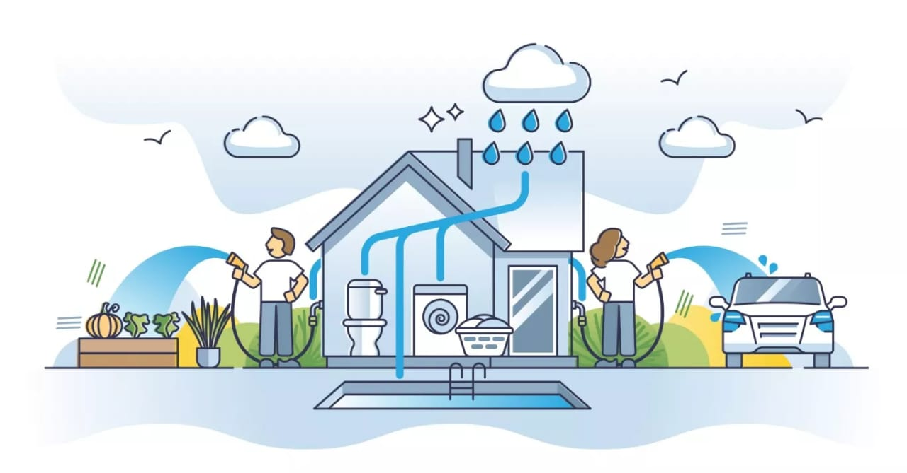

El Problema: Escasez en la Región
Zinacantepec enfrenta desafíos crecientes en el suministro de agua. La sobreexplotación de mantos acuíferos y la infraestructura obsoleta han provocado cortes y baja presión en múltiples colonias.
Nuestros datos indican que más del 30% de la población sufre escasez de agua al menos una vez por semana. Es hora de dejar de depender de fuentes externas y aprovechar el recurso más abundante que tenemos: la lluvia.
